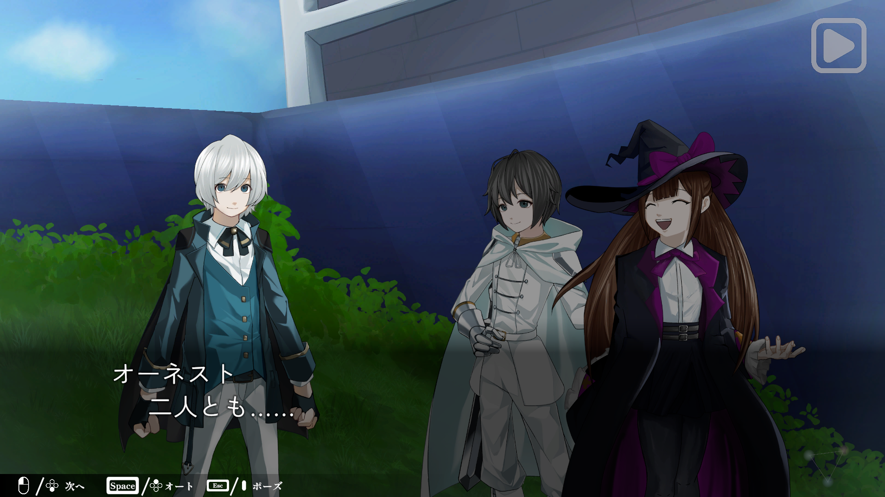

Overview
学校のメンバーを集めて制作したノベル・ステルスゲームです
Information
- コンセプト：選択
- 担当：ノベルシステム・UI・シナリオ
- 制作期間：半年
- 制作人数：約20人
- 使用技術：Unity / C# / Unitask/ GitHub
Point
チーム制作の中でノベルシステムとUIを担当し、シナリオや演出の変更に対応しやすい構成を意識して実装しました。
テキスト進行、選択肢、画面遷移などを分けて管理することで、他メンバーが作業しやすく、後から仕様を追加しやすい形にしています。
